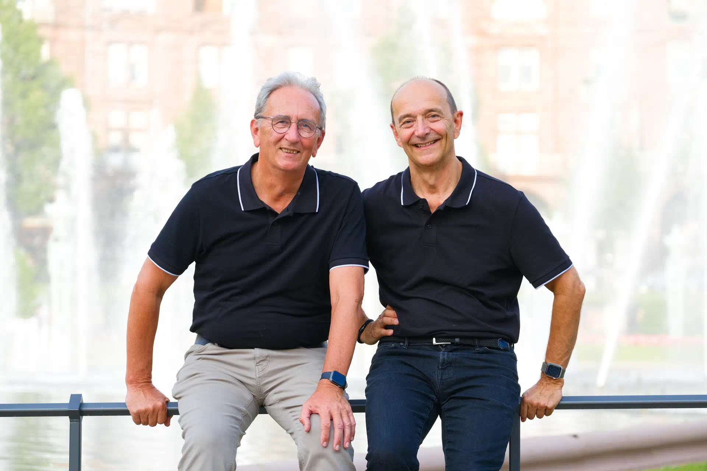

Čeština
Translation by Jakub RC.
Current07 / About arc42
arc42 began in 2005 as a pragmatic response to recurring architecture communication failures. It remains free, open source, and shaped by a worldwide community.
 05
05Field-tested since 2005
The template has evolved through consulting, architecture reviews, training, books, examples, translations, and feedback from teams across many industries.

01 / Maintainers
INNOQ fellow, coach, consultant, author, arc42 cofounder, aim42 founder, and founding member of iSAQB. His experience spans finance, insurance, automotive, logistics, and telecommunications.
Partner of Atlantic Systems Guild, requirements and architecture practitioner, author, and founding member of iSAQB and IREB. Peter brings decades of embedded and real-time systems experience.
Solutions architect and maintainer of the arc42 generator. His work connects the template with docs-as-code workflows and helped establish docToolchain.
Every translation represents editorial work, domain knowledge, and continued maintenance. The production site should make that stewardship visible.
Translation by Jakub RC.
CurrentTranslation and talks by Damien Lucas.
CurrentTranslation by László Séra, released in 2026.
CurrentTranslation by Ivan Bulyk with support from Larysa Visengeriyeva.
MaintenanceTranslation by Chris (Gentle) Y杨 and DannyGe.
Current03 / Open project
Contribute through GitHub, report an issue, improve a translation, or publish an example that helps another team.